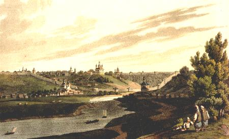

|

|
If I walk the noisy streets,
Or enter a many thronged church,
Or sit among the wild young generation,
I give way to my thoughts.
I say to myself: the years are fleeting,
And however many there seem to be,
We must all go under the eternal vault,
And someone's hour is already at hand.
When I look at a solitary oak
I think: the patriarch of the woods.
It will outlive my forgotten age
As it outlived that of my grandfathers'.
If I caress a young child,
Immediately I think: farewell!
I will yield my place to you,
For I must fade while your flower blooms.
Each day, every hour
I habitually follow in my thoughts,
Trying to guess from their number
The year which brings my death.
And where will fate send death to me?
In battle, in my travels, or on the seas?
Or will the neighbouring valley
Receive my chilled ashes?
And although to the senseless body
It is indifferent wherever it rots,
Yet close to my beloved countryside
I still would prefer to rest.
And let it be, beside the grave's vault
That young life forever will be playing,
And impartial, indifferent nature
Eternally be shining in beauty.
Views of St. Petersburg in the 19th Century
|